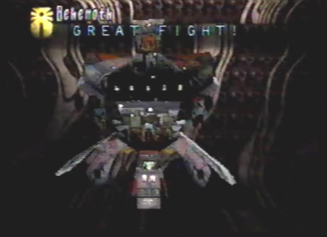
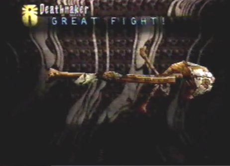

Sub-Boss: Behemoth  |
Strategy After destroying ten ships among the Empires' Anchored Fleet, we were attacked by a gigantic battlestation. The dragon, while in his Spiritual form, moved directly in front of the massive hunk of ancient technology and constantly used his Armageddon berserk attack. Between each attack, we were hit hard by Missiles and Plague Rockets. After many Armageddon attacks, we had finally caused the engine to blow and it descended to the water below. The battlestation soon restored partial engine power, and began moving along the surface of the water. As it moved towards us, I overheard one of the Imperial officers utter something about a "Disintegrator" weapon, that was being charged. I also noticed a vulnerable spot within the center of the gigantic machine. To protect ourselves from this "Disintegrator", I immediately had the dragon cast his Astral Phantoms defensive attack. The dragon also changed into his Attack form so he could bombard the vulnerable spot with his powerful lock-on lasers. The machine completely opened up, preparing to fire the Disintegrator. At this point in the battle, the vulnerable spot was fully revealed and open to attack. When the dragon's laser power was charged, he fired his lock-on lasers upon the central weak point, taking heavy damage. Soon after, the Disintegrator weapon was fired and a deadly rain of lasers fell down upon us. It took not an ounce of damage and was immediately deflected, thanks to the Astral Phantoms. Just as a precaution, the dragon cast Astral Phantoms once more to protect us just in case another Disintegrator shot was fired. The dragon then continued to fire his lock-on lasers at the exposed weak point. As we continued our assault, the armor surrounding the weak point closed, covering its vulnerable spot. It needed time to recharge. In the mean time, the dragon charged up his laser energy. It was only a matter of time before the armor covering the weak point opened again. When it did, the dragon fired a few more lock-on lasers, and victory was ours! |
Divine Enemy Info
Normal/Attack Direction Explosive/ALL Special Plague Rocket/ALL Wide Spread Blitz/ALL |
Length 126.0 Ln Height 135.0 Ln Width 117.0 Ln Weight 436800 Kn Dynes 500 Dn Exp Pts 844 EXP Items Relic-Weaponry Relic-Armor |
Boss: Deathmaker  |
Strategy As I approached the northern launch pad, after having destroyed the Control Tower, the Empire launched a mobile warhead destined for Zoah! If I didn't do something fast, all of Zoah and its people would be reduced to ash! As the giant missile ran its course along the launch rail, the dragon, while in Attack form, shot lock-on lasers at both of its main boosters located on the left and right sides of the warhead's tail. Once both of the side boosters were taken out, the dragon continued its array of lock-on lasers, as well as his Armageddon berserk attack, taking major damage. The warhead then launched up into the sky, determined to reach Zoah. We had to destroy this thing, and fast! It was now an all out aerial battle! The dragon continued his bombardment of lock-on lasers, from all different directions and soon changed into his Spiritual form. We needed to end the battle as quickly as possible, and the dragon's Armageddon berserk attack was just what we needed! After taking heavy damage, the warhead detached its stabilizer component. When we fired two more Armageddon attacks, it detached its main booster as well as its horizontal tail wing. It was now reduced to its simplest form, a form of unimaginable destructive power! Time was just about running out. In a last ditch effort to halt the flight path of the warhead, the dragon finished it off with one final Armageddon berserk attack. The warhead detonated just moments away from Zoah. We had saved the Village, it was certainly a most gratifying relief! |
Divine Enemy Info
Normal/Attack Direction Close Range Gun/Left and Right Special Machine Gun Random Shot /ALL |
Length 117.0 Ln Height 22.5 Ln Width 36.0 Ln Weight 11700 Kn Dynes 800 Dn Exp Pts 1266 EXP Items Elixir Maxis Berserk Medis |